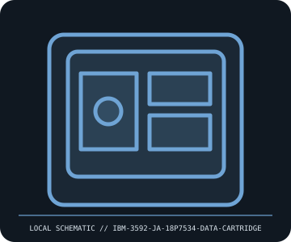

[ REMOVABLE MEDIA // MODEL-SPECIFIC RECORD ]
IBM 3592 JA 18P7534 300 GB Data Cartridge
IBM 3592 enterprise tape JA/J1A-generation cartridge. This catalog entry distinguishes the removable medium from its drive/reader and calls out model-specific fit and format caveats.

IDENTIFICATION: Transcribe the entire model/part number, capacity, generation and revision from the label or packaging. Confirm the exact host-device manual before inserting or writing.
Format, capacity and compatibility
| Product / part ID | IBM 3592 JA 18P7534 300 GB Data Cartridge |
|---|---|
| Generation / format | IBM 3592 enterprise tape JA/J1A-generation cartridge |
| Capacity and medium | IBM 3592 JA data cartridge part 18P7534; 300 GB native capacity in J1A format (900 GB only with assumed 3:1 compression). Cartridge includes 3592 media-memory functions and is enterprise library media. |
| Compatibility | Read/write at J1A 300 GB format in supported IBM 3592 J1A drives; TS1120/TS1130 can handle this generation subject to their supported format and initialization modes. Later 3592 drives have generation-specific read/write restrictions—consult IBM’s drive/media matrix. |
| Version and model caveat | 18P7534 denotes JA/J1A generation; 3592 media families and densities (JB, JC, JD and later) are not inferred interchangeable. Compression and later-drive capacity depend on selected recording format and software; retain barcode suffix and drive model in the record. |
Handling and preservation
Inspect shell, leader pin, and cartridge condition before loading; keep clean, dry, in case, and within IBM’s temperature/humidity limits. Avoid touching tape or applying liquid to the shell/leader. Track cleaning cartridge use and drive alerts; verify written data via restore and checksum.
- Preserve original packaging, label, acquisition notes and any write-protect state; photograph the media before use.
- Make at least two independent copies of valuable data, verify checksums, and periodically test a restore. A removable cartridge or card alone is not an archival strategy.
Model and version notes
18P7534 denotes JA/J1A generation; 3592 media families and densities (JB, JC, JD and later) are not inferred interchangeable. Compression and later-drive capacity depend on selected recording format and software; retain barcode suffix and drive model in the record.
Standards and product-family sources establish the generation; exact model manuals, labels, regional revisions, firmware, interface and host support determine actual interchangeability.
Sources and standards
- IBM — 3592 cartridges compatible with 3592 tape drivesPrimary IBM compatibility table for 3592 media types and supported drive generations.
- IBM — 3592 Operator Guide (PDF)IBM operation and media-handling guidance for TS1120/TS1130 and JA/J1A cartridge generations.
Manufacturer and standards references are preferred; archival manuals or museum records are identified when products are discontinued. Capacity and compatibility claims are scoped to the specific SKU and generation named above.